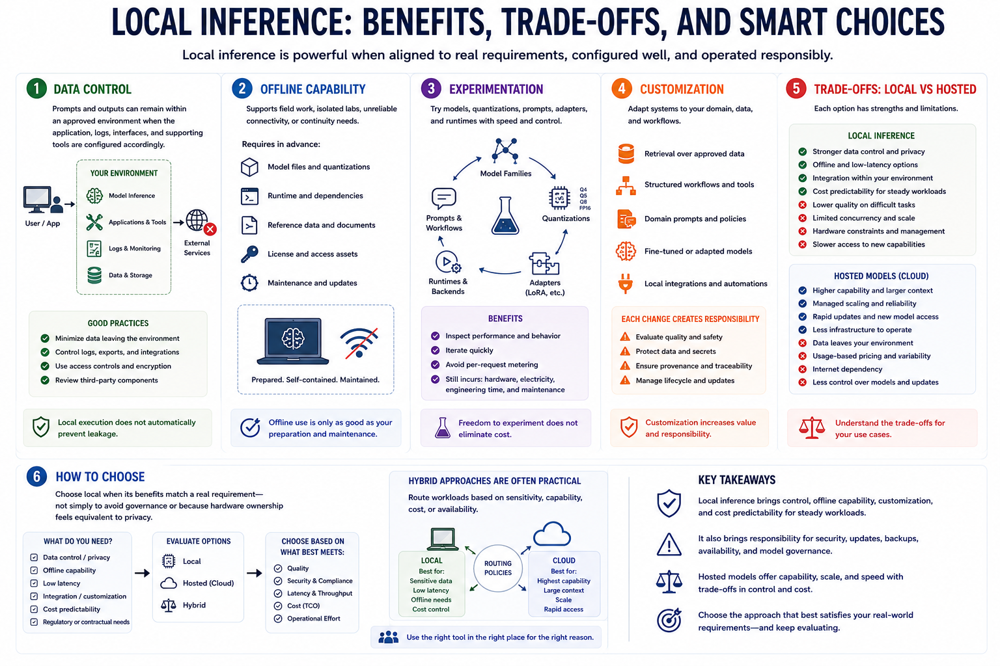

Why Run LLMs Locally?
Connecting to LMS... Progress: in progress

Narration
Data control is a common reason for local inference. Prompts and outputs can remain within an approved environment when the application, logs, interfaces, and supporting tools are configured accordingly. Local execution does not automatically prevent leakage.
Offline capability can support field work, isolated labs, unreliable connectivity, or continuity needs. The model, runtime, dependencies, documentation, and required reference data must already be available and maintained for offline use to be meaningful.
Local systems support experimentation with model families, quantizations, prompts, adapters, and runtimes. Teams can inspect performance and behavior without every request becoming a metered external call, although hardware, electricity, engineering time, and maintenance still have cost.
Customization may include retrieval over approved data, structured workflows, domain prompts, fine-tuned or adapted models, and local integrations. Each change creates evaluation, security, provenance, and lifecycle responsibilities.
Hosted models may offer stronger capability, larger context, managed scaling, rapid updates, and less infrastructure work. Local models may have lower quality on difficult tasks, limited concurrency, hardware constraints, and slower access to new capabilities.
Choose local when its control, latency, offline, integration, or economic benefits match a real requirement. Do not choose it solely to avoid governance or because hardware ownership feels equivalent to privacy. Hybrid approaches are often practical.